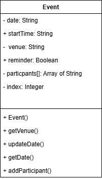

Technical Explanation
This program demonstrates testing and calling methods on objects to verify they work correctly. Having defined methods in the previous program, this program shows how to call those methods with various inputs and verify their outputs. Testing methods is crucial to ensure objects behave as expected. The program demonstrates calling methods with different parameters, capturing return values, and verifying the results match expectations. This includes edge cases (boundary conditions) and normal use cases. Key technical skills include method invocation syntax, passing arguments to methods, interpreting return values, and systematic testing of object behavior.
Analysis
### End User Requirements
1. The user wants to verify that methods work correctly before relying on them in production.
2. The user wants to test methods with various inputs to ensure they handle all cases.
3. The user wants clear evidence that methods are returning correct results.
4. The user wants to identify and fix any bugs in method implementations.
### Functional Requirements
#### Advanced Higher concepts
The solution is required to:
FR1 Call methods on test objects systematically.
FR2 Pass various parameter values to test methods under different conditions.
FR3 Capture and verify return values against expected results.
FR4 Test edge cases and boundary conditions.
#### Integration
The solution is required to:
FR5 Display test results clearly to show method behavior.
FR6 Compare actual results against expected values.
FR7 Report test pass/fail status for each test case.
#### Additional functional requirements
The solution is required to:
FR8 Test each method independently and in combination.
FR9 Include edge cases (zero, negative, maximum values, empty strings).
FR10 Display clear output showing all test cases and results.
FR11 Document what each test case is verifying.
FR12 Review the design pseudocode against the UML diagram before running tests.
FR13 Review the code to confirm each method matches the design before running tests.
---
Design
Class name: Event
This program develops directly from Program 3. The class structure is the same, but the focus now is on testing each method thoroughly. Before running the tests, review the UML diagram, the English pseudocode and the Python code to check that they all describe the same constructor and methods.

### English Pseudocode Constructor: Event() 1. Accept the starting date, time, venue and reminder values. 2. Store each value in the new object. 3. Create an empty participants list. 4. Set the participant index to the first free position. Method: getVenue() 1. Read the venue stored in the object. 2. Return that venue value. Method: updateDate() 1. Accept a new date value. 2. Replace the object's current start date with the new date. Method: getDate() 1. Read the current start date from the object. 2. Return that date value. Method: addParticipant() 1. Accept a participant name. 2. Store the name in the participants list at the next free position. 3. Increase the index so the next participant goes into the next space.Implementation
[Program 4 - testing methods in a class.py](./Program%204%20%E2%80%93%20testing%20methods%20in%20a%20class.py)
SQA-RL:
```
CLASS Event
DECLARE startDate AS STRING
DECLARE startTime AS STRING
DECLARE venue AS STRING
DECLARE reminder AS BOOLEAN
DECLARE participants AS ARRAY[1:20] OF STRING
DECLARE index AS INTEGER
PROCEDURE Event(newStartDate, newStartTime, newVenue, newReminder)
SET startDate TO newStartDate
SET startTime TO newStartTime
SET venue TO newVenue
SET reminder TO newReminder
SET index TO 0
END PROCEDURE
FUNCTION getVenue() RETURNS STRING
RETURN venue
END FUNCTION
PROCEDURE updateDate(eventDate)
SET startDate TO eventDate
END PROCEDURE
FUNCTION getDate() RETURNS STRING
RETURN startDate
END FUNCTION
PROCEDURE addParticipant(name)
SET participants[index] TO name
SET index TO index + 1
END PROCEDURE
END CLASS
DECLARE item1 AS NEW Event("13/04/18", "0900", "Main Office", TRUE)
SEND item1.getVenue() TO DISPLAY
SEND item1.getDate() TO DISPLAY
CALL item1.updateDate("13/04/22")
SEND item1.getDate() TO DISPLAY
CALL item1.addParticipant("Erica Knowles")
CALL item1.addParticipant("Norman Osborne")
CALL item1.addParticipant("Fred Savage")
SEND item1.participants[0] TO DISPLAY
SEND item1.participants[1] TO DISPLAY
SEND item1.participants[2] TO DISPLAY
SEND item1.index TO DISPLAY
DECLARE item2 AS NEW Event("20/06/18", "1400", "Assembly Hall", FALSE)
SEND item2.getVenue() TO DISPLAY
SEND item2.getDate() TO DISPLAY
```
This implementation keeps the same class from Program 3 and adds a more thorough test sequence. The tests begin with a pseudocode review and a code review, then check each method using known inputs and expected outputs.
### Notes
- Review the design before testing so the code can be checked against the intended methods
- Test state changes by checking values before and after a method call
- Test multiple calls in sequence to confirm that object state is preserved correctly
- Compare actual vs expected values for each test case
---
Python Code
class Event:
def __init__(self, startDate, startTime, venue, reminder):
self.startDate = str(startDate) #String
self.startTime = str(startTime) #String
self.venue = str(venue) #String
self.reminder = reminder if isinstance(reminder, bool) else str(reminder).strip().lower() in ("true", "1", "yes", "y") #Boolean (don't use bool(reminder): bool("False") is True)
self.participants = [""]*20 #Array of String
self.index = int(0) #Integer
def updateDate(self, eventDate):
self.startDate = str(eventDate)
def getDate(self):
return self.startDate
def getVenue(self):
return self.venue
def addParticipant(self, name):
self.participants[self.index] = str(name)
self.index = self.index + 1
# Pseudocode review:
# Check that the UML and English pseudocode show the same constructor and methods.
# Code review:
# Check that the Python class contains Event(), getVenue(), updateDate(), getDate() and addParticipant().
# Test the constructor and getter methods with a first object.
item1 = Event("13/04/18", "0900", "Main Office", True)
print("Constructor/getVenue test 1:", item1.getVenue())
print("getDate test 1:", item1.getDate())
# Test updateDate() by checking the date before and after the change.
item1.updateDate("13/04/22")
print("getDate test 2:", item1.getDate())
# Test addParticipant() with several names and check the array positions and index.
item1.addParticipant("Erica Knowles")
item1.addParticipant("Norman Osborne")
item1.addParticipant("Fred Savage")
print("addParticipant test 1:", item1.participants[0])
print("addParticipant test 2:", item1.participants[1])
print("addParticipant test 3:", item1.participants[2])
print("Participant index:", item1.index)
# Test constructor independence with a second object.
item2 = Event("20/06/18", "1400", "Assembly Hall", False)
print("Constructor/getVenue test 2:", item2.getVenue())
print("getDate test 3:", item2.getDate())
Test Plan
| Test Case | Method / Review | Input | Expected Output | Evidence |
|---|---|---|---|---|
| Design review | Pseudocode review | Compare the UML diagram and English pseudocode | Both show the same constructor and methods to be tested | Before: Missing or inconsistent steps / After: Design matches UML |
| Implementation review | Code review | Compare the Python class to the UML diagram and pseudocode | The code contains matching methods and uses the object's own data | Before: Methods missing or inconsistent / After: Code matches design |
| Normal constructor case | Event() | Create Event("13/04/18", "0900", "Main Office", True) | Object is created with the given values | Before: Object not created / After: Stored values can be read back |
| Second object independence | Event() | Create Event("20/06/18", "1400", "Assembly Hall", False) | A second object is created independently with different values | Before: Data overlap / After: Each object keeps its own data |
| Getter test 1 | getVenue() | Call item1.getVenue() | Returns Main Office | Before: Missing or incorrect venue / After: Correct venue displayed |
| Getter test 2 | getVenue() | Call item2.getVenue() | Returns Assembly Hall | Before: Wrong venue / After: Second object's venue displayed correctly |
| Date getter before update | getDate() | Call item1.getDate() before updating | Returns 13/04/18 | Before: Incorrect date / After: Original date returned |
| Setter state change | updateDate() | Call item1.updateDate("13/04/22") | The stored date changes to 13/04/22 | Before: Old date remains / After: Date updated |
| Date getter after update | getDate() | Call item1.getDate() after updating | Returns 13/04/22 | Before: Old date returned / After: Updated date returned |
| Add participant first slot | addParticipant() | Add "Erica Knowles" | Name is stored in participants[0] | Before: First slot empty / After: First slot contains the name |
| Add participant next slot | addParticipant() | Add "Norman Osborne" and "Fred Savage" | Names are stored in the next free positions and index becomes 3 | Before: Later slots empty / After: Names stored and index incremented |